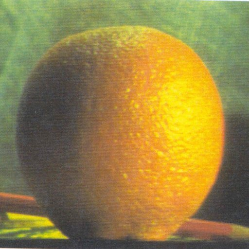
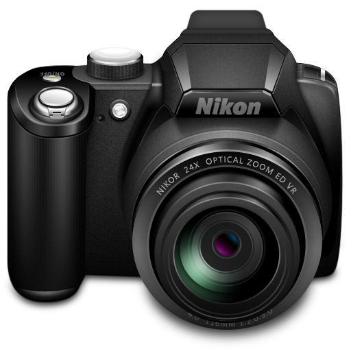
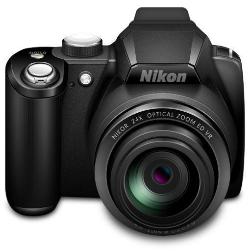

CSC 589 AU / Homework 4 / Image Blending Using Pyramids

Apple and Orange combined down the middle.
In this assignment I attempted to develop a program that would take two images of the same size and blend them together down the middle in a way that would not leave a clear line where the images were connected. Despite many hours of effort, I was unable to accomplish that. I have included the results from my code and the results from the example code so that the intended effect can be compared to the actual effect.
Example code
Assignment Github Page
Process:
- Read in images.
- Split the images into Blue, Green, and Red.
- Laplacian and gaussian pyramids are created from each individual color channel.
- To create a pyramid:
- Blur an image and then throw out every other pixel.
- Do that to each new image until it is 2 pixels by 2 pixels.
- For every item in the gaussian pyramid, create an image 2 as large with the same information.
- Subtract the larger gaussian image from the original gaussian image to create the laplacian image.
- Image A and B pyramids of each color channel are joined down the middle.
- That is done by stacking together the left half of imageA and the right half of imageB for every image in each pyramid.
- Collapse the single color channel pyramid into one image.
- Make an empty image of the same size as the base image.
- start at the top of the image and work downwards.
- double the size of the layer, then combine it with the layer below.
- Depth stack the three images from the collapsed pyramids.
- The combined images should form a single color image blurred down the middle.
Pyramid Blending
I can't comment on the effectiveness of the pyramid method based on my own code, but I can observe some flaws with the results of the example code. This blending method worked really well with the two example images have the same dark background and the subjects are fairly similar in color. The gaussian blurring has a much more pronounced effect in the other image combinations, especially the house and castle. Both of those images are bright and have a lot of white in them. When they are blurred, they end up looking washed out. This pairing also demonstrates how unnatural pyramid method blending looks when 2 different backgrounds are used. Of course, in a real world context, the siloete of the castle would be cut out and placed over the house.
The baseball and basketball image also demonstrates a different problem: the blur doesn't help much if the images don't line up. The subject of both images is a large circle, but the baseball is just a little smaller than the basketball and the blending does nothing to conceal that. The blending also bleeds over into the empty space outside of the image subjects.
Original Images

 

|
Clearly the program I wrote doesn't work. Based on the reading I've done about pyramid blending, I don't think that I'm misunderstanding the concept. I believe that the problem is simply a bug in my code that, after many hours of work, I have not been able to identify. It probably is related to the way the gaussian filter is overlaid on the rest of the pyramid, but there shouldn't be a problem.
I did not want to turn in nonfunctional code, but I can't continue.